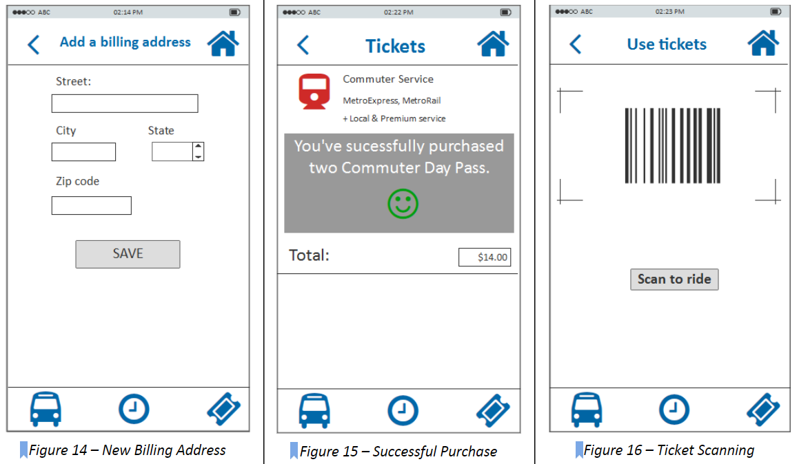

LOW FIDELITY PROTOTYPE
Our team decided to focus on four major user tasks to build our prototypes. These user tasks came from our hierarchical task inventory. We focused on user interacting with the main features of the applications. These four major user tasks are using the following features of the application: “Schedule”, “Trip Planner”, “Ticketing”, and “Next Departure”.
Schedule
In order to view the schedule, the user first selects the schedule feature on the main menu bar. Then, user selects a type of service (Figure 1 - Schedule Home), enter the bus information by number or name such as “Downtown Austin” or “Lake Austin” (Figure 2 - Select route), and the date of service (Figure 3). Then, user views the schedule for that particular transit service by time and/or location (stop location) in a drop down menu. The estimated number of minutes for the bus to arrive at the stop location (Figure 4 - View Schedule) will be displayed.
Trip Planner
To plan their trip, the user will need to enter both a starting and ending location (Figure 5). then the screen will display details related to the current trip (Figure 6), this includes a map of the route and a step-by-step guide. Both secondary-screens can be clicked on to expand their screen-size. Within the step-by-step guide, text descriptions of each event will include a clickable icon that will allow further details about the trip to be accessed by the user.
Ticketing

To buy tickets and use tickets, the user needs to go to the tickets homepage (Figure 8). If they are not logged-in and want to proceed, there will be a pop-up message to ask them either sign up for an account to sign in (Figure 9). After the user go through the sign up/in process (Figure 10, Figure 11), they can click the right-arrow icon to view different ticket packages (Figure 12) to choose the most appropriate one to add to the shopping cart.

Then the user needs to enter credit/debit card information (Figure 13) to add a new card by clicking the plus icon. The user can enter the card number either manually or just use the camera icon to scan the card. If the user successfully scan the card number, he/she will hear the crack of camera and the card number will automatically appear in the entry box. The user also needs to add a billing address for the card (Figure 14). After they add a card in their account, they can checkout and they will get a message if they successfully purchase tickets (Figure 15). Then the user can use the tickets purchased to scan the barcode (Figure 16) when they board the bus.
Next Departure
In the homepage, user can add a shortcut to quickly access the next departure time by choosing stop id and route number. To find the next departure times, the user first selects the next departure feature on the main menu bar at the bottom of the home screen with the bus symbol . Then the user will get into the main page of next departure (Figure 17). The user can choose to select the bus stop on the map (Figure 18), which is indicated by a bus with a circle . If the bus stop is selected, the icon will turn red . Or the user can choose to input the bus stop name manually (Figure 19), and the system will automatically detect a list of names of possible bus stops. After the user has chosen the bus stop, the user can touch the checkmark to confirm his or her selection, and the list of next departure time will show up (Figure 20).
PILOT TEST
After we built our prototype, we took a careful review on every page first to make sure the links and interactions work well. Then we recruited a participant that resembled the characteristics of our primary persona.
The test took about 10-12 minutes. As the participant was looking at the screen interacting with the application, team member took notes on their responses to the questions as well as their general behaviors. During the 5 minute free interaction part of the test, one difficulty that user had was figuring out what each symbol on the main menu meant (what feature is represented by each symbol). The picture symbols did not seem intuitive for user to figure out what features they represented so the participant asked during the pilot testing where she needs to go to plan out a trip to go somewhere. She clicked on a few options before finding the next departure feature on the homepage main menu.
After interacting with the application for five minutes, the user was able to identify the main features that were made available through the application and was able to complete the tasks asked of her during testing and gave feedback based on her experience with the application depending on the prompting questions that were asked.
HEURISTIC EVALUATION
Our prototype was evaluated by another group of designers and here is a list of findings from their evaluations.
The search bar in the home screen does not display a clear purpose, user may not know exactly what to use it for
Main menu has icons that are not intuitive for user to know what functions they offer
When selecting a service option under “schedule,” only the arrow is clickable to go to the next screen, which makes it hard to user to figure out how to get to the next screen so better to make the whole service option clickable including the picture icon and text label.
It was difficult to figure out how to make a purchase (make a payment) for a ticket. There seems to be no “submit” or “buy” button to make a final purchase.
Under “trip planner” and “next departure,” the stop ID is presented for the destination (stop location) but there seems to be no need for that as user may not even be sure of what that means. What is more important to include would be the bus number and street names.
After viewing “schedule,” it would be nice to have an option to save a viewed schedule so user can refer back to it again in the future if it is a bus that he/she takes frequently.
Under “schedule,” consider another way to display the bus departure times instead of a drop down menu (drop down menu seems to suggest that the user needs to select an option).
It was hard to find the “trip planner” feature which is currently placed in the hamburger menu on the top left side so need to make “trip planner” more evident and easy to find for user.
User may not be sure of the difference in functionality for “trip planner” and “next departure” as they seem to overlap in some functionalities.
The functionality of each feature on the main menu is not clear as the picture symbols are not intuitive for user to know what they offer.
HIGH FIDELITY PROTOTYPE
After discussing about the pilot test result and the recommendations we got from the heuristic evaluation, we decided to made some changes to our prototype. Below are a few examples of direction to be taken on redesigns of the application.

Redesign 1: Homepage with clear labels, locations of stops and improved cognitive affordance.

Redesign 2: Schedule page with the nearest multipal bus lines approaching the current stop.
Previous Next Departure Page

Redesign 3: Next departure page with a intuitive timeline displaying the time and location for a bus
.png)
Previous Use Tickets Page


Redesign 4: Users can be alerted after geting on the bus.


Redesign 5: Ticketing page with a more clear layout and call to action buttons.
Previous Use Tickets Page


Redesign 6: Added a screen with a list of bought tickets.